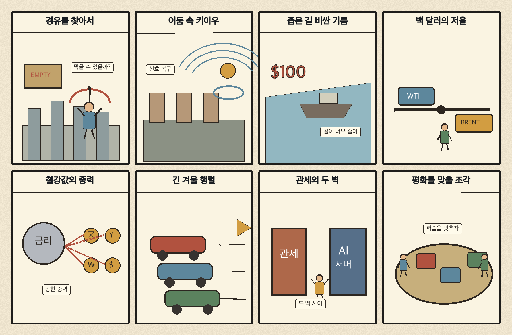
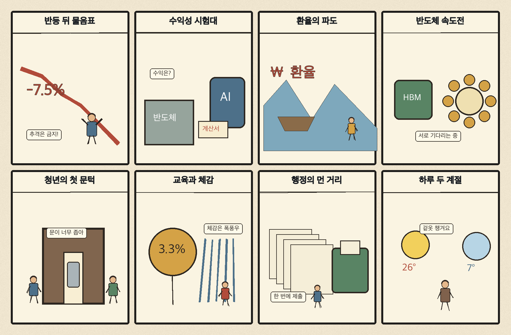

01
슈퍼마이크로컴퓨터 · 34.47→31.63달러 · -8.25%
내용요약 시가 대비 -8.25%로 조사 종목 중 낙폭이 가장 컸습니다. 인공지능 투자 부채와 수익성 우려가 서버 관련 고변동 종목에 집중됐습니다.
예상여파 국내 인공지능 서버·부품주에도 밸류에이션 압력이 이어질 수 있어 월요일 시초가 추격을 피해야 합니다.
MORNING_BRIEFING_20261017
작성 시각: 2026-10-17 06:34 KST · 직전 미국 정규장과 2026-10-17 KST 당일 공개 기사 기준
직전 미국 정규장인 10월 16일 뉴욕증시는 다우 -0.34%, S&P 500 -1.09%, 나스닥 -2.15%로 하락했습니다. 인공지능 투자 부채와 수익성 우려가 기술주 전반을 압박했고, 국제유가 상승으로 에너지주는 상대적으로 견조했습니다. 한국 증시는 토요일 휴장입니다. 다음 거래일에는 금요일 국내 반등의 지속성보다 미국 기술주 급락, 유가 100달러 재돌파와 환율·외국인 수급을 먼저 확인해야 합니다.
| 지수 | 종가 | 등락률 | 한국 증시 시사점 |
|---|---|---|---|
| 다우존스 | 52,002.41 | -0.34% | 주말 뒤 위험회피와 외국인 수급 약화 가능성 점검 |
| S&P 500 | 7,659.44 | -1.09% | 주말 뒤 위험회피와 외국인 수급 약화 가능성 점검 |
| 나스닥 종합 | 26,140.03 | -2.15% | 인공지능·반도체 고평가 부담으로 국내 성장주 심리 압박 |
인공지능 부채·수익성 우려가 기술주 매도를 키웠습니다.
금요일 5,668.05로 반등했지만 급락분을 일부만 회복했습니다.
공급 불안이 수입물가와 운송·화학 비용 부담을 높입니다.
공식 추천 없이 월요일 환율·수급·시초가를 재확인합니다.
10월 16일 보고서는 급락 직후 극단적 변동성과 장전 시가·호가 미형성 때문에 점수·확률·손익비 문턱을 모두 검증한 종목이 없어 공식 추천을 내지 않았습니다. 게시 당시 판단을 유지하며 금요일 반등을 보고 사후 종목을 추가하지 않습니다.
| 시장 | 종가 | 등락률 | 기준 |
|---|---|---|---|
| KOSPI | 5,668.05 | +2.05% | 10월 16일 · 시가 대비 +0.25% |
| KOSDAQ | 794.78 | +4.46% | 10월 16일 · 시가 대비 +2.93% |
| 다우존스 | 52,002.41 | -0.34% | 미국 10월 16일 정규장 |
| S&P 500 | 7,659.44 | -1.09% | 미국 10월 16일 정규장 |
| 나스닥 종합 | 26,140.03 | -2.15% | 미국 10월 16일 정규장 |
다이아몬드백 +3.52%, 옥시덴털 +2.03%로 유가 상승 수혜가 나타났습니다.
월마트는 시가 대비 +0.56%로 기술주 급락 속 상대 강세였습니다.
팔란티어 -8.07%, 크라우드스트라이크 -7.77%로 고평가 성장주가 압박받았습니다.
슈퍼마이크로컴퓨터는 시가 대비 -8.25%로 조사 종목 중 낙폭이 컸습니다.
내용요약 시가 대비 -8.25%로 조사 종목 중 낙폭이 가장 컸습니다. 인공지능 투자 부채와 수익성 우려가 서버 관련 고변동 종목에 집중됐습니다.
예상여파 국내 인공지능 서버·부품주에도 밸류에이션 압력이 이어질 수 있어 월요일 시초가 추격을 피해야 합니다.
내용요약 시가 대비 -8.07%로 급락했습니다. 인공지능 소프트웨어의 높은 기대치와 투자 회수 우려가 동시에 재평가됐습니다.
예상여파 국내 소프트웨어·인공지능 테마에도 위험회피가 번질 수 있으며 실적과 현금흐름이 약한 종목의 변동성이 더 커질 수 있습니다.
내용요약 시가 대비 -7.77%로 보안 소프트웨어까지 매도가 확산됐습니다.
예상여파 보안 수요의 장기 성장과 별개로 고평가 성장주의 할인율 부담이 커져 국내 보안주의 단순 동조 매수는 경계합니다.
내용요약 시가 대비 -6.70%로 우주산업 고변동주가 약세였습니다.
예상여파 우주 스타트업 자금 유입 뉴스와 상장 주가 흐름은 분리해서 봐야 하며 개발 실패·자금조달 위험이 큽니다.
내용요약 시가 대비 +3.52%로 조사 종목 중 상승 폭이 가장 컸습니다. 유가 급등과 공급 불안이 에너지 생산주의 상대 강세로 이어졌습니다.
예상여파 국내 정유·에너지에는 심리상 우호적이지만 고유가는 항공·운송·화학과 소비 전반에는 비용 충격입니다.
한국 증시는 토요일 휴장입니다. 금요일 KOSPI는 +2.05%, KOSDAQ은 +4.46% 반등했지만 미국 나스닥이 뒤이어 -2.15% 하락했고 WTI가 100달러를 재돌파했습니다. 월요일에는 반도체·인공지능 성장주의 시초가 압박과 정유주의 상대 강세 가능성을 함께 보되, 원·달러 환율과 외국인 현·선물 수급이 안정되기 전에는 급락·급등 종목을 추격하지 않습니다.
오늘은 추천 없음 — 현금 관망
토요일 국내 증시 휴장으로 당일 시가 진입 기준을 세울 수 없습니다. 또한 미국 기술주 급락과 유가 충격 속에서 전일까지의 수급·컨센서스 변화, 30건 이상 유사 조건 표본을 함께 확보해 종합점수 75점·상승확률 60%·예상 손익비 1.5를 모두 검증한 종목이 없습니다.
관심 연결종목 정유·에너지의 유가 민감도와 반도체·인공지능주의 낙폭은 월요일 관찰 대상일 뿐 매수 추천이 아닙니다. 장전 갭과 시초가 변동성을 확인하기 전 추격매수를 금지합니다.
나스닥 -2.15%가 월요일 국내 성장주에 반영되는 정도를 봅니다.
정유 상대강세와 항공·운송·화학 비용 충격을 함께 점검합니다.
월요일 개장 전 원·달러와 외국인 선물 방향이 핵심입니다.
낮 최고 27도, 큰 일교차와 시설물 안전에 유의합니다.
핵심 요약: 인공지능 반도체 수요는 TSMC 생산능력 확보 경쟁과 소형 개발장비 출시로 확장되고 있습니다. 동시에 기업 데이터의 학습 활용 기준, 클라우드 관측성과 우주 스타트업 자금의 지속 가능성처럼 기술 확산 뒤의 운영·규제·재무 문제가 더 중요해졌습니다.
내용요약 엔비디아의 소형 인공지능 개발 장비 RTX 스파크가 공식 출시됐으며 활용성은 높지만 가격 부담이 있다는 당일 보도입니다. 개인·연구 조직의 로컬 인공지능 개발 환경이 넓어지는 흐름입니다.
예상여파 개발 장비 생태계 확대는 모델 실험과 엣지 인공지능 수요에 우호적이지만 초기 가격과 실제 업무 효율이 보급 속도를 좌우합니다.
내용요약 인공지능 반도체 수요가 급증하면서 기업들이 TSMC 생산능력을 확보하기 위해 고객 관계와 공급망 협상을 강화한다는 당일 보도입니다.
예상여파 첨단 파운드리 병목은 칩 출하 일정과 가격 협상력을 좌우하며 국내 설계·패키징·소재 기업에도 기회와 납기 위험을 함께 줍니다.
내용요약 문을 닫은 스타트업의 업무용 대화와 전자우편이 인공지능 학습 자료로 거래되는 사례와 국내 처리 기준의 공백을 다룬 당일 보도입니다.
예상여파 기업 데이터의 소유권·개인정보·영업비밀 기준이 강화될 수 있어 인공지능 학습 데이터 계약과 파산 절차의 규정 정비가 필요합니다.
내용요약 민간 우주기업의 상장 기대를 계기로 우주 스타트업에 유입된 글로벌 자금이 사상 최대 수준이라는 당일 보도입니다.
예상여파 위성·발사체·지상국 생태계 투자는 늘 수 있지만 긴 회수기간과 높은 개발 실패율 때문에 기술 검증과 현금흐름 선별이 중요합니다.
내용요약 뉴 렐릭이 인공지능 작업 부하 시대의 복잡한 클라우드 운영을 통합 관찰하는 인프라스트럭처 360을 내놓았다는 당일 보도입니다.
예상여파 인공지능 서비스 비용·장애 원인을 한 화면에서 추적하려는 수요가 커지며 관측성·보안·클라우드 최적화 시장 경쟁이 심화될 수 있습니다.
핵심 요약: 전쟁과 공급 차질이 경유·원유 가격을 밀어 올리고 키이우 전력망과 가자지구 민생을 압박하고 있습니다. 미국 철강 가격까지 관세와 공급 부족으로 상승해 에너지·원자재 비용이 세계 물가와 산업정책의 공통 위험으로 부상했습니다.
내용요약 전쟁과 정유시설 차질로 경유 공급이 빠듯해지면서 세계 각국의 확보 경쟁이 심해졌다는 당일 보도입니다.
예상여파 운송·농업·산업용 연료비가 오르면 상품 물가와 물류비가 재차 상승하고 에너지 수입국의 무역수지 부담이 커질 수 있습니다.
내용요약 공급 우려 속에 서부텍사스산원유가 배럴당 100달러를 다시 넘고 브렌트유가 110달러에 접근했다는 당일 보도입니다.
예상여파 고유가는 항공·화학·운송 업종의 비용과 각국 물가를 끌어올려 금리 인하 기대를 늦출 수 있습니다.
내용요약 우크라이나 수도 키이우와 6개 지역에서 대규모 정전이 발생해 100만명 이상이 영향을 받았다는 당일 보도입니다.
예상여파 전력망 복구 비용과 민간 생활 위험이 커지고 유럽의 에너지·방공 지원 부담도 장기화될 수 있습니다.
내용요약 미국 철강 가격이 톤당 1,255달러로 4년 만의 최고 수준에 올랐다는 당일 보도입니다. 관세와 공급 부족이 가격 상승 배경으로 지목됐습니다.
예상여파 자동차·건설·기계의 원가 부담이 커지는 한편 미국 현지 생산 능력을 보유한 업체에는 가격 협상력이 생길 수 있습니다.
내용요약 가자지구 주민들이 기반시설 훼손과 물자 부족 속에서 혹독한 겨울을 맞을 수 있다는 당일 보도입니다.
예상여파 인도주의 지원과 휴전 이행 압력이 커지고 구호품·연료 반입 차질이 지역 불안과 국제 외교 부담을 높일 수 있습니다.

핵심 요약: 금요일 증시 반등 뒤에도 고변동 파생 베팅과 반도체 투자 속도 논쟁이 이어졌습니다. 금융행정 이전, 인공지능 시대 청년 재교육과 주말 강풍·일교차까지 정책·산업·생활 현안을 함께 점검합니다.
내용요약 KOSPI 급락 뒤 해외 가상자산 거래소의 일부 큰손 계정이 반등 방향에 높은 비중을 뒀다는 당일 보도입니다.
예상여파 고변동 파생 포지션은 투자심리 참고값일 뿐 현물시장 반등을 보장하지 않으며 청산 위험 때문에 추격 근거로 쓰기 어렵습니다.
내용요약 반도체 투자 속도를 둘러싼 국내 정책·입법 지연이 산업 경쟁력의 장애가 될 수 있다는 당일 논평입니다.
예상여파 전력·용수·인허가와 연구개발 지원의 예측 가능성이 떨어지면 글로벌 생산능력 경쟁에서 투자 집행이 늦어질 수 있습니다.
내용요약 금융위원회의 세종 이전 논의에 금융감독원과 국책은행 등 금융권이 대응책을 검토하고 있다는 당일 보도입니다.
예상여파 감독기관과 시장 참여자의 물리적 거리, 인력 이동과 업무 연속성이 정책 집행 속도와 금융권 비용에 영향을 줄 수 있습니다.
내용요약 청년 조사에서 53.8%가 근로시간 단축과 고용 유지에 기대를 보였고 86.4%가 인공지능 관련 교육을 희망했다는 당일 보도입니다.
예상여파 직무 전환교육의 접근성과 기업 현장 수요를 맞추는 정책이 청년 고용 충격을 줄이는 핵심 변수가 될 수 있습니다.
내용요약 토요일은 대체로 맑고 낮 기온이 오르지만 일교차가 크고 전국에 강한 바람이 예상된다는 당일 예보입니다.
예상여파 야외 일정에는 체온 조절용 겉옷과 시설물 안전 점검이 필요하며 건조한 지역은 화재 예방에도 주의해야 합니다.
